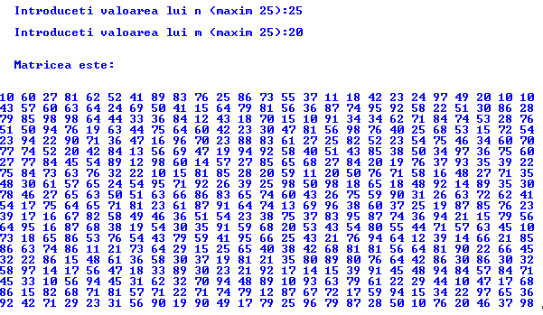
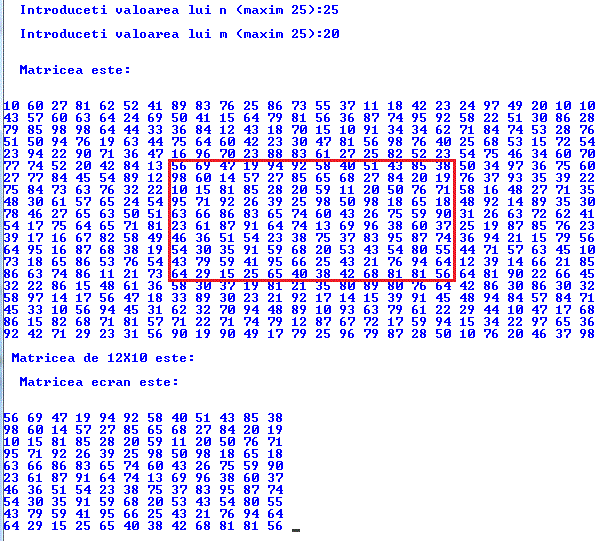
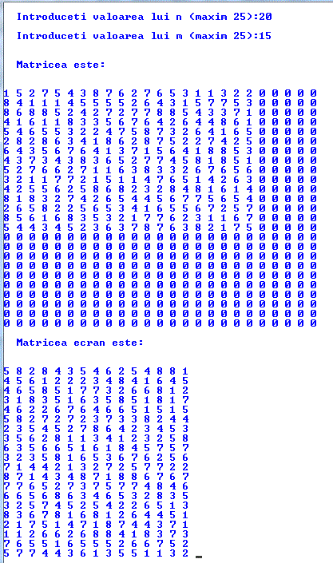
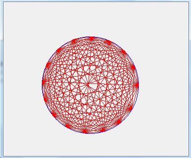
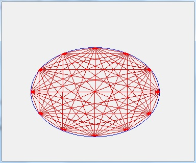
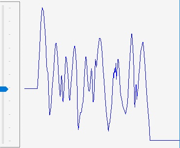

Teme program
Vectori
- Creati un tablou unidimensional cu 7 elemente, reprezentand consumurile zilnice de energie dintr-o saptamana.
- Calculati consumul saptamanal de energie.
- Calculati consumul mediu de energie.
- Afisati consumurile din zilele in care s-a depasit consumul mediu
- Creati un nou tablou cu consumurile din zilele in care s-a depasit consumul mediu
- Reluati aplicatia anterioara si pentru consumurile lunare (31 zile). Valorile consumurilor vor fi generate aleator cu valori intre 100 si 200
- Realizati un programul cere 5 numere, le salveaza intr-un vector dupa care afiseaza elementele vectorului in ordine inversa
- Creati un tablou unidimensional cu n elemente random. Construiti un nou tablou din elementele primului, astfel incat
elementul curent sa reprezinte suma elementelor din primul tablou pana la pozitia elementului curent.
- Creati un tablou unidimensional cu n elemente random, dupa care :
- afisati media aritmetica a elementelor tabloului
- afisati media geometrica a elementelor tabloului - folosind functia pow
- afisati elementele insotite de textul "par" sau "impar"
- afisati elementele pare, apoi afisarea elementelor impare.
- realizati un nou vector unde numerele pare sa ocupe primele locuri
- Creati un tablou unidimensional cu n elemente random, dupa care atribuiti elementelor valorile unei functii (ex x*x) si afisarea lui
- Realizati o aplicatie care realizeaza shift-ari intr-un vector
- se va utiliza un tablou unidimensional (un vector)
- se cer n numere de la tastatura
- Se shift-eaza dreapta 1 pozitie
- Se atribuie 0 primului element
- Realizati o aplicatie care realizeaza o rotire intr-un vector
- se va utiliza un tablou unidimensional (un vector)
- se cer n numere de la tastatura
- Se shift-eaza dreapta 1 pozitie
- Se atribuie primului element valoarea ultimului element
- Reluati aplicatia anterioara si realizati o noua aplicatie care realizeaza k rotiri intr-un vector
- Realizati un programul cere n numere, le salveaza intr-un vector, se pun elementele vectorului in ordine inversa dupa care se afiseaza
- Diverse teme:
- eliminarea unui element dintr-un vector
- eliminarea duplicatelor dintr-un vector
- intersectia a doi vectori
- reuniunea a doi vectori
- sortarea unui vector
- interclasarea a doi vectori
- afisarea sumei elementelor, media elementelor, max, minim,
Matrici
- Realizati un tablou bidimensional cu nxn elemente initializat cu numere pozitive

- Afisati elementele de pe diagonala principala unui tablou bidimensional cu nxn elemente
- Afisati elementele de pe diagonala secundara unui tablou bidimensional cu nxn elemente

- Afisati minimul si maximul unui tablou bidimensional cu nxn elemente
- Afisati media aritmetica a elementelor unui tablou bidimensional cu nxn elemente
- Realizati un tablou bidimensional cu 25X20 elemente initializat cu numere pozitive,dupa care extrageti o matrice aflata la
5 elemente distanta pe verticala, 7 elemente distanta pe orizontala. Dimensiunea noii matrici va fi:w=12, h=10.

- Realizati un tablou bidimensional cu mazim 25X25 elemente. Initializati 20X15 elemente cu numere pozitive,
dupa care rotiti matricea 20X15 spre stanga 90 de grade

- Realizati un tablou bidimensional cu mazim 25X25 elemente. Initializati 20X15 elemente cu numere pozitive,
dupa care rotiti matricea 20X15 spre dreapta 90 de grade
- Realizati un tablou bidimensional cu mazim 25X25 elemente. Initializati 20X15 elemente cu numere pozitive,
dupa care rotiti matricea 20X15 pe axa x
- Realizati un tablou bidimensional cu mazim 25X25 elemente. Initializati 20X15 elemente cu numere pozitive,
dupa care rotiti matricea 20X15 pe axa y
- Realizati un tablou bidimensional cu mazim 25X25 elemente. Initializati 20X15 elemente cu numere pozitive,
dupa care rasturnati matricea 20X15
- Se genereaza o matrice de numere aleatoare si se afiseaza suma pe coloane.
- Deplasare dreapta o pozitie intr-o matrice
Vectori in spatiul System
- Folosind un vector in care pastrati diametrele mai multor cercuri ,trasati cercurile, dupa care colorati cu rosu cercul a carui raza este cea mai mare.

- Folosind un vector in care pastrati 180 de puncte echidistante pe un cerc realizati aplicatia.

Vectorul de puncte va fi definit sub forma:
Point[] vector_puncte = new Point[180];
Punctele se unesc dupa regula ”se uneste punctul nr x cu punctul nr (m * x)%180”,
unde m este un nr intreg intre 1-179 selectat intr-un numeric updown.
Matrici in spatiul System
Sa se realizeze o aplicatie in care se atribuie valori elementelor unui tablou.
Se redimensioneaza dupa care se verifica daca s-au mai pastrat valorile atribuite anterior.
- Folosind o matrce in care pastrati diametrele, si poxitiile pe x a mai multor cercuri, trasati cercurile dupa care colorati cu rosu cercul a carui raza este cea mai mare.
- Simulati caderea picaturilor de ploaie

- modificati legea de miscare pentru a simula miscarea browniana a particolelor
- Simulare grafica metode de ordonare

- Se realizeaza aplicatia cu baloane de sapun
- Se coloreaza jumatate cu albastru (metoda 1 dublarea instructiunilor, metoda 2 if (i%2))
- Modificarea aplicatiei pentru a reimprospata pozitiile aleatoare pentru a nu se repeta pozitiile
- Desenati 10 cercuri la pozitii si de diametre aleatoare. Pozitiile si diametrele vor fi memorate intr-un array

- Rotiti dreapta imaginea cu cercuri realizata anterior.
- Realizati o aplicatie care imparte cercul in 12 arce egale, memoreaza pozitia punctelor de pe cerc intr-un array
dupa care realizeaza imaginea:

- Realizati o aplicatie care imparte cercul in 12 arce egale, memoreaza pozitia punctelor de pe cerc intr-un array
dupa care realizeaza imaginea:

- Realizati o aplicatie care imparte cercul in 16 de arce egale. Memoreaza pozitia punctelor de pe cerc intr-un array
dupa care traseaza linii rezultand imaginea:

- Realizati o aplicatie care imparte cercul in 16 de arce egale. Memoreaza pozitia punctelor de pe cerc intr-un array
dupa care traseaza linii rezultand imaginea:

- Reluati aplicatia anterioara si realizati imaginea:

- Adaugati un TrackBar pentru a seta numarul de puncte. Aplicatia va fi similara cu:

- Realizati o aplicatie grafica pentru afisarea grafica a evolutiei in timp a unei valori de forma :

- Simulare afisare imagine ecran